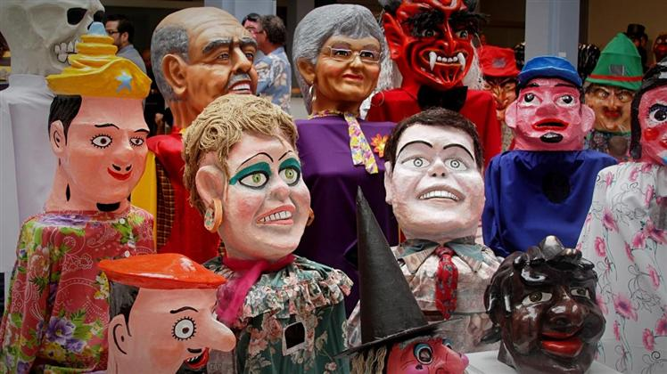

Cultura
La cultura de Costa Rica es reconocible y variada al tener influencias inicialmente de la cultura indígena y
europea,
posteriormente de la cultura afrocaribeña y asiática. Existen en el país tecnologías tradicionales, prácticas
agrícolas, culturales y religiosas, y creencias, que conectan en los campos genético y cultural a la población
actual con sus antepasados indígenas, europeos y africanos. Costa Rica es un país mestizo, multiétnico,
multilingüe y pluricultural, en la que coexisten sistemas de comunicación social muy diversos que van desde el
creol limonense hasta usos y costumbres de origen ibérico, pasando por culturas y formas de pensamiento tan
disímiles como la china, la indígena o la menonita.
Folclor

El Boyeo y La Carreta Típica
La carreta típica de Costa Rica es símbolo cultural del país. La tradición del boyeo y la carreta típica
de Costa Rica es un rasgo cultural costarricense que consiste en la decoración artesanal de carretas con
distintos dibujos de llamativos colores, cada una con diseños únicos que pueden ser figuras geométricas, flores,
animales o paisajes. El arte de la carreta pintada se realiza a mano, de forma artesanal. Generalmente, la
carreta se pinta de color anaranjado, blanco o rojo, y encima se le pintan los diseños característicos, que en el
pasado también se utilizaban para identificar la comunidad o lugar de procedencia del boyero. La elaboración de estas
carretas se ha conservado gracias a artesanos del cantón de Sarchí, pero las celebraciones a los boyeros se realizan
en diversos cantones a lo largo y ancho del país, como Escazú, donde se celebra el Día Nacional del Boyero,
los segundos domingos del mes de marzo en el distrito de San Antonio de Escazú, donde se realiza un colorido
desfile de carretas que recorre las calles principales del cantón.

Mascarada Costarricense
La mascarada tradicional costarricense es una tradición popular de Costa Rica que tiene raíces en la época
colonial del país, y que en la actualidad continúa muy vigente. Su origen parece ser producto de prácticas
festivas coloniales y amerindias. Se encuentra relacionada con la festividad española de los gigantes y
cabezudos, con influencias de comunidades indígenas autóctonas, lo que le da a su origen un carácter
pluricultural y sincrético. Los distintos personajes representados en las máscaras reciben localmente el nombre
de mantudos o payasos, y se caracterizan por pasearse por las calles de los pueblos durante las diversas
festividades populares o religiosas y turnos, persiguiendo a los asistentes, bailando al son de música de
cimarrona y acompañados de fuegos artificiales.
Artes
Museo Nacional de Costa Rica
Costa Rica cuenta con gran diversidad de museos especializados en todos los ámbitos: antropología, arqueología,
artes, cultura popular, entomología, filatelia, historia, historia natural, numismática, etc. La principal
institución es el Museo Nacional de Costa Rica, creado en 1887, que se encuentra actualmente en el Cuartel
Bellavista, un antiguo edificio en forma de fortaleza que data de 1917, que luego de la abolición del ejército
nacional en 1949 pasó a ser administrado por el museo y es su sede principal. El museo cuenta con varias salas
de exhibición permanente, donde destacan la de historia precolombina, donde se exhiben más de 800 objetos
prehispánicos provenientes de las tres grandes áreas culturales del país (Gran Nicoya, Central-Atlántica y
Díquis).
Teatro Nacional de Costa Rica
El Teatro Nacional es un edificio de arquitectura historicista terminado en el año de 1897. Se le considera uno
de los inmuebles más importantes de la historia nacional, y principal joya arquitectónica de la ciudad de San
José. Su construcción guarda un profundo significado dado que representa la decisión del costarricense a la hora
de emprender acción y de la estabilidad económica y política de la época en la que fue construido. Como
institución, el Teatro Nacional promueve la producción de las artes escénicas de alto nivel artístico y conserva
para el uso del público varias de las obras de arte más valiosas del país.